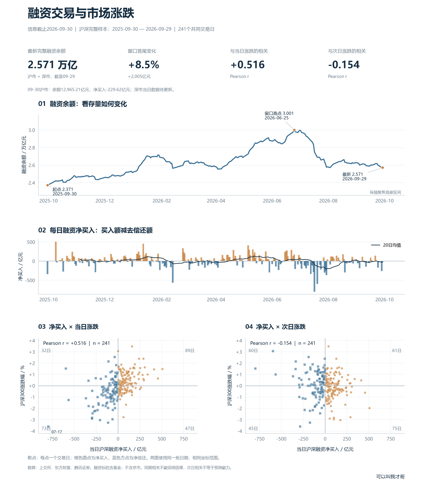
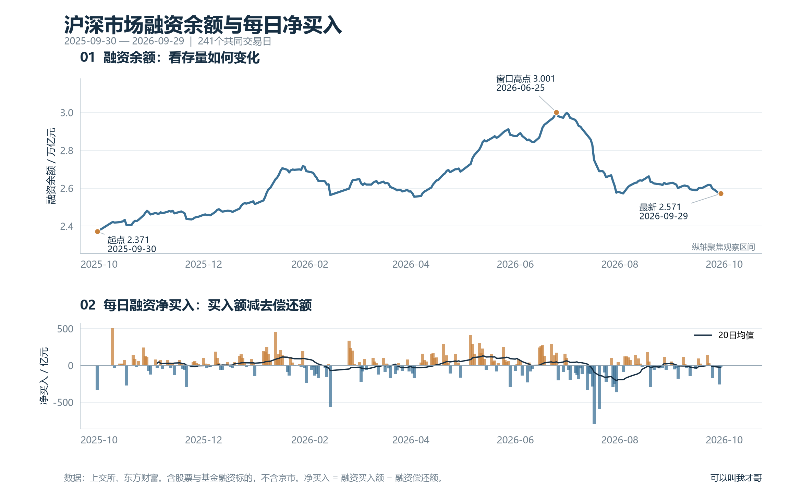
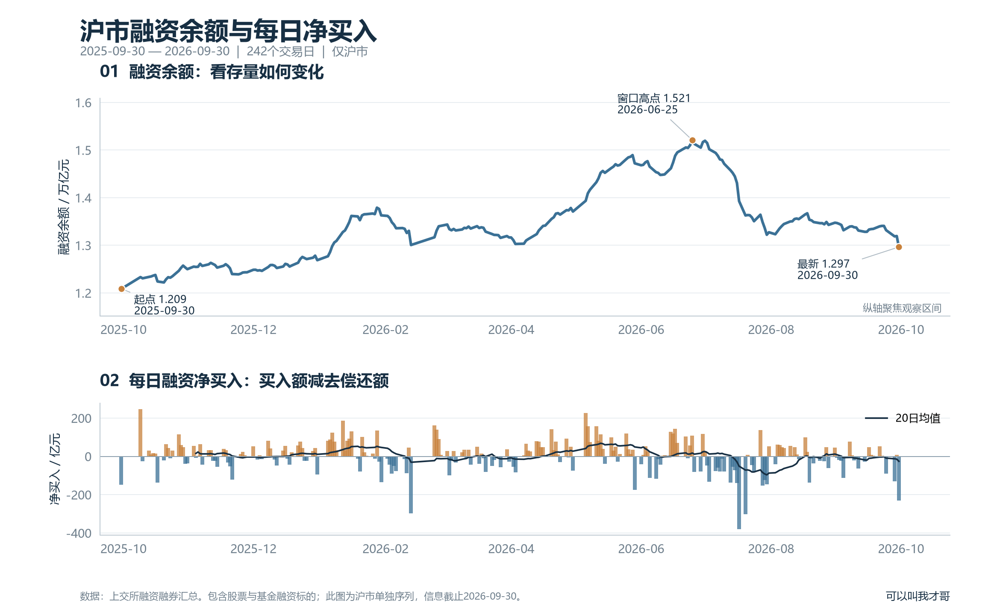
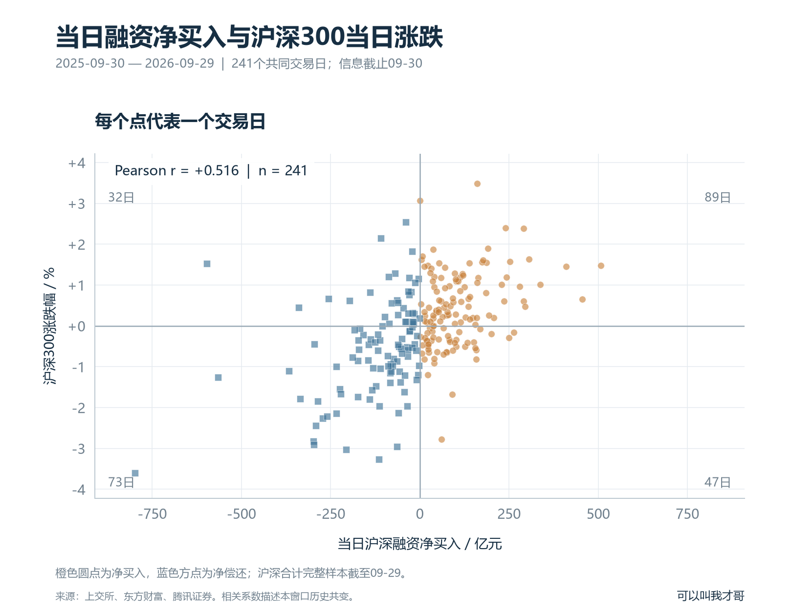
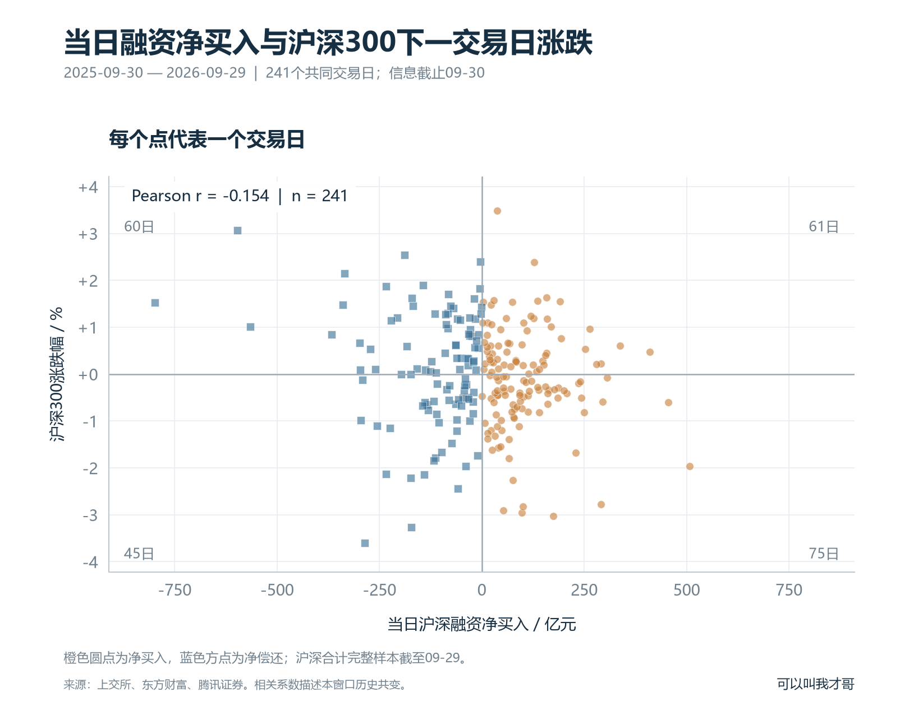
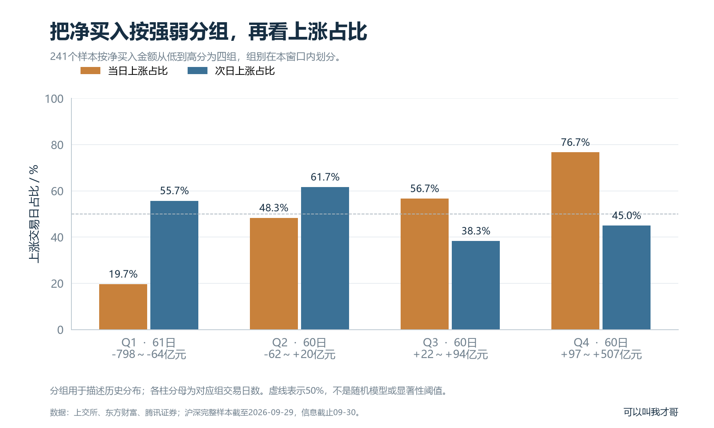
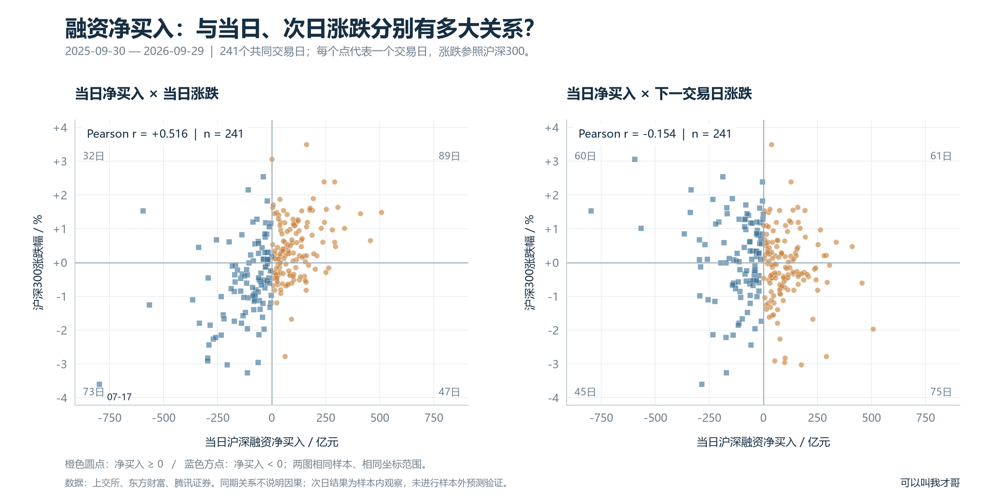

融资净买入与市场涨跌：把当日和次日分开看
信息截止2026-09-30；沪市已更新到09-30，深市当日数据暂缺。
沪深完整样本：2025-09-30 — 2026-09-29 · 241个交易日
最新完整融资余额 2.571 万亿元；同期相关 +0.516，次日相关 -0.154。点击图片查看原图。
融资交易总览



融资余额与净买入



沪市融资余额与净买入



融资净买入与当日涨跌



融资净买入与次日涨跌



净买入分组与上涨占比



融资净买入与涨跌散点图



数据：上交所、东方财富、腾讯证券。汇总含基金融资标的，不含京市。相关系数描述历史共变。